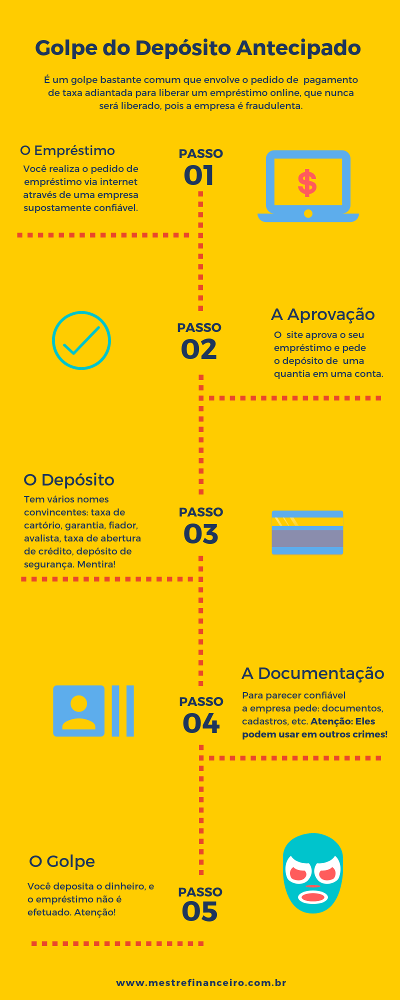

Com o aumento da velocidade do nosso dia-a-dia , acompanhada com o avanço da tecnologia, muitas empresas começaram a usar a internet para prestar serviços com maior rapidez, conforto e segurança.
Essa mudança radical começou a impactar no fornecimento de vários serviços financeiros. Mas são os empréstimos online que tem ganhado bastante atenção dos brasileiros.
Em tempos de crise econômica, a procura por opções de empréstimos pessoais que são mais dinâmicos, com menos burocracias, taxa de juros mais em conta, e maior agilidade, aumentaram consideravelmente em 2018.
Segundo um estudo feito pela Lendico, fintech de crédito pessoal, o número de pedidos de empréstimo pessoal online apresentou alta de 90% em agosto deste ano em relação ao mesmo período do ano passado.
Por ser um tipo de serviço financeiro realizado de forma online, existem muitas pessoas que, por falta de conhecimento junto à vontade de fazer um bom negócio e às dificuldades financeiras, tornam-se alvos para os estelionatários.
De acordo com o Banco Central, o golpe do depósito inicial é um dos que mais fazem vítimas no país. Entre janeiro e julho de 2017, o Banco Central recebeu 727 reclamações de pessoas que acreditaram na possibilidade de obter crédito de forma rápida, sem burocracias e com juros inferiores aos cobrados no mercado.
Para tirar todas as suas dúvidas sobre a confiabilidade dos empréstimos online, eu separei cinco dicas de como realizar esse serviço de forma segura e evitar os golpes na internet:
1. Pesquise os dados da empresa que oferece o empréstimo
Como em qualquer outra compra de produto ou serviço, é importante pesquisar o histórico e os dados da empresa. Um ótimo dado para iniciar a busca, é a sua situação junto a Receita Federal através do CNPJ da empresa. Separei um passo a passo de como fazer essa conferência, confira:
Passo 1: Copie o número do CNPJ da empresa que pode ser encontrado facilmente no rodapé da empresa. Caso, não encontre no site da empresa, digite no google o “nome da empresa + CNPJ”.
Passo 2: Copie o CNPJ da empresa no site da Receita Federal.
Passo 3: Verifique se ele possui alguma pendência na receita e procure os motivos, para garantir que a empresa está legalmente exercendo suas funções.
Passo 4: Verifique se a empresa utiliza o mesmo do domínio na internet e na receita, pois muitas empresas que aplicam golpes utilizam nomes fantasia.
Passo 5: Copie o CNPJ da empresa no site do Banco Central ou ligue para o 145 para saber mais informações.
Passo 6: Averigue se o site em questão possui a autorização necessária para oferecer crédito.
2. Verifique a segurança do site utilizado para o empréstimo online
Sites em que são processadas informações sigilosas possuem certificados de segurança que garantem a confiabilidade do serviço. Empresas fraudulentas não seguem estes protocolos de segurança. Confira o passo a passo para verificar a segurança do site:
Passo 1: Verifique se o site possui certificado de segurança que são emitidos por organizações de confiança da internet. O certificado de segurança geralmente será exibido na forma de uma imagem dentro do site.
Passo 2: Clique na imagem do certificado de segurança para verificar se você será redirecionado diretamente ao site da organização e confirmar se existem credenciais válidas. Se não houver possibilidade de clicar em cima da imagem, então é bem provável que o site seja duvidoso.
Passo 3: Verifique se o site possui um certificado de segurança (um cadeado verde fechado que está localizado no início do link, ao lado do “https”).
Passo 4: Verifique se o domínio do site é próprio. Caso a terminação for: .com ou .com.br, pode confiar no site, mas se a terminação for: webnode.com, há grandes chances do site ser fraudulento.
3. Pesquise a reputação da empresa
Em uma realidade em que as recomendações pela internet determinam o sucesso ou fracasso dos negócios, analisar a reputação da empresa, as reclamações e os elogios que foram feitos, é de extrema importância antes de tomar a decisão de seguir com um empréstimo pessoal.
Passo 1: Pesquise a reputação da empresa em plataformas de avaliação, como reclame aqui, para analisar se pessoas já tiveram problemas de fraudes com essa instituição.
Passo 2: Procure a empresa em redes sociais como facebook, instagram e verifique as recomendações dadas pelos usuários, bem como os comentários dos posts realizados.
Passo 3: Coloque o nome da empresa no Google. Podem ser descobertos alguns comentários ou informações sobre uma possível farsa ou não. Se não descobrir nada, tente "nome da empresa+ fraudes" e veja se os resultados.
4. Nunca realize depósitos antecipados
Independentemente do valor, um pagamento antecipado é caracterizado como tentativa de golpe. Essa é uma prática proibida pelo Banco Central, e instantaneamente torna o status da empresa como fraudulenta.
O WhatsApp tem sido um dos meios preferidos dos fraudadores e para evitar esse tipo de transtorno, eu explico como funciona o golpe do depósito antecipado na imagem abaixo:
5. Avalie os dados do contrato assinado
Após a realização do empréstimo online, muitos consumidores não realizam um check nos dados do contrato que a empresa deve, obrigatoriamente, fornecer. Por isso é importante que você:
Passo 1: Leia o contrato com bastante atenção.
Passo 2: Revise todas as condições apresentadas no contrato, e se os valores das parcelas estão de acordo com o requisitado.
Passo 3: Caso haja algum problema no contrato, entre em contato com a empresa para corrigir os erros antes de assinar.
6. Resolução do golpe
De acordo com o Banco Central, após o pagamento dessas taxas, as vítimas raramente conseguem reaver o dinheiro. Quando acionado via Central de Atendimento ao Cidadão, o Banco Central notifica as instituições financeiras sobre a utilização de contas bancárias para a aplicação de golpes, mas cabe à polícia investigar as fraudes.
Ainda que depois de todas as dicas que te dei, você por ventura cair em um golpe, saiba como resolvê-lo:
Passo 1: Ao confirmar que caiu em um golpe pela internet, registre uma ocorrência na Polícia Civil;
Passo 2: Entre em contato com o Banco Central pelo portal de Atendimento ao Público que informará as instituições financeiras sobre a utilização de contas para fins ilícitos;
Passo 3: Após análise, essas contas irão ser bloqueadas ou encerradas pelos bancos;
Passo 4: A recuperação do seu dinheiro só ocorre após decisão judicial.
Agora que você já sabe como se livrar dos golpes de empréstimos online, organize as suas finanças com as minhas dicas. Baixe o Guia de Empréstimo Pessoal a seguir: